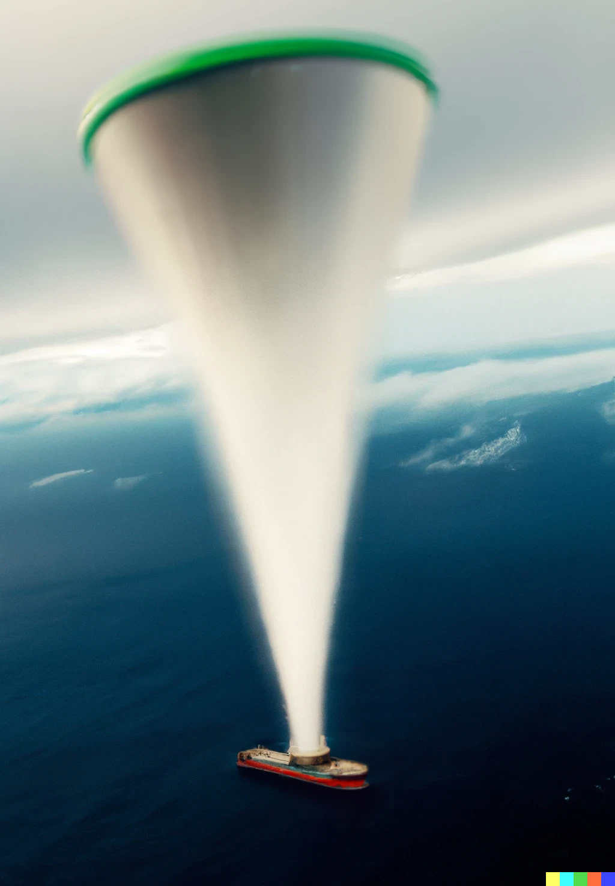
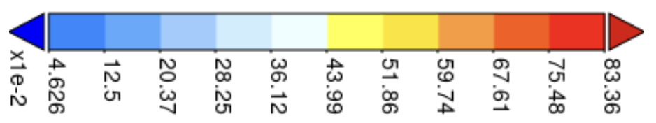

The last installment 1 established that simply by combining well-established technologies, we can collect meaningful quantities of fresh water as rainfall over the ocean and deliver it in bulk to a pipeline terminal. Importantly, this collection and delivery scheme can be achieved without burning geologic carbon, using only renewable solar and wind energy.
Let me remind you that the climate impact of such a simple system, at scale, would be both significant and synergistic with nature. We know that if water is delivered to arid land, nature pulls carbon out of the atmosphere and stores it. Plus, agriculture is economically productive! At the right price point, we can use the system to create profit without relying on a carbon market.
Here’s a better visual of the proposed solution for you to chew on:

It’s a simple concept, but at this scale, nothing is easy. Any installation on the open ocean must be adaptable and durable, particularly in the face of variable weather. Fortunately, rainfall is concentrated in an area known as the Intertropical Convergence Zone , where weather systems in the Northern and Southern Hemispheres collide to create thunderstorms. This location has the added advantage that surface winds are generally calm, and as it turns out, hurricanes never cross the equator.
One foreseeable problem would be the weight of a heavy downpour. Water flowing in the funnel will add weight and could cause the balloon to lose buoyancy if the funnel can’t support the weight of water in the funnel.
Let’s look at a recent rain event in the area of interest to see if the approach could have been practical. Last night, satellite measurements suggest a strong thunderstorm happened over the equatorial Indian Ocean. Here’s an animation:

In this storm, there was a 2-3 hour period where rainfall sustained around 0.75 inches per hour over a large area (each box represents about 740 acres, so more than enough to collect).
How would our balloon/supertanker have fared in this storm?
The area of the mouth of our cone is 400 acres, so that works out to 25 acre-feet per hour flowing into the boat, or 136,000 gallons per minute/2,700 gallons per second. On the plus side, at this rate, instead of taking a month, it’d only take 16 hours to fill the boat. Rain falls at a terminal velocity of 15-25 miles per hour, so a funnel extending 4,000 feet above the surface in such a downpour might need to support about 2 minutes of rainfall. In a steady downpour, some 272,000 gallons would be en route from the cloud to the hold, but not all of it would add weight.
The math gets too complicated for me to trust my rusty skills, and it’s certainly not worth dragging my readers through calculus. If you are so inclined, though, consider that rain falling at the center of the cone would fall straight through and not add any weight, whereas rain falling at the edge of the cone would need to be carried for the entire time. In a steady downpour with no wind, each vertical increment through the funnel will contain the same volume of water (area•∂h = constant). Each unit area of the balloon/funnel would only need to support the weight of the water above it, possibly adjusted for the angle of the cone to the vertical since that is the vertical force on the flowing water. For the real nerds, there could be an optimal shape that is less conical and more horn-shaped—consider it homework in AP Calc! As this is not a graded assignment, please feel free to share!
At the base of the funnel, one could imagine a Niagara Falls-like free flow of water. There, the water velocity is reported to be 32 feet per second or 22 miles per hour, so it’s consistent with a downpour. To prevent backing up because of flow, the area of the opening into the boat would need to be greater than the number of cubic feet per second divided by 32. That works out to an opening of about 12 square feet, about the area of a 4-foot diameter pipe. Not a show-stopper at all, even in a much heavier storm. A refined design might have an outlet as wide as the draft on the tanker (94 feet). This would reduce the sustained weight needed to be carried by the balloon.
Design nuances aside, suppose the design specification required the balloon to support the sustained weight of a full acre-foot (325,000 gallons) of water in a heavy downpour. That’s about 1,000 tons or more than four times the weight of the balloon fabric itself. This would require more hydrogen to remain aloft, but it’s not prohibitive. Another problem for the engineers to figure out! It doesn’t render the proposal unworkable, and there are other solutions. For example, it may only require a simple device to release excess water during periods of high flow based on the relative height of the balloon and the collection vessel (like a flush toilet mechanism).
The thought experiment here raises another interesting feature. A rainfall of 12 inches per month may come in brief, irregular squalls where an inch of rain falls in an hour. That means our apparatus can move to where the rain is, rather than parking in a single spot. Water collection could be more efficient in that case.